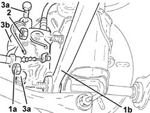
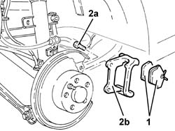
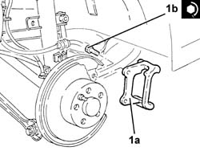
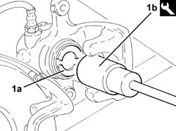
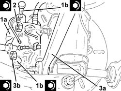

3310B57 REAR CALLIPER BRACKET - R R
- Path
- Procedures > 33 BRAKING SYSTEM > 3310 DISC BRAKES > 3310B REAR DISC BRAKES > 3310B57 REAR CALLIPER BRACKET - R R
- Kind
- repair procedure (removal / refitting; the operation number is the code)
- Applies to
- all engines; all production periods
- Interactive page
- https://sloeber94.github.io/elrnDB-aGt/en/#/125001330
Applies to: all engines; all production periods
 Removing
Removing
 Refitting
RefittingPosition the vehicle on the ramp
Proceed with removal
Op. 4450B11 TYRE INFLATION VALVE CAP - REPLACE
1. Undo the nut (1a) of the bolt and move the rear suspension front trailing arm (1b) as much as necessary.
2. Undo the nut on the top bolt securing the shock absorber to the hub vertical link.
3. Undo the bolts (3a) and move the rear brake caliper (3b) away from its bracket.

Applies to: all engines; all production periods
1. Remove the rear brake pads.
2. Undo the bolts (2a) and remove the rear brake caliper bracket (2b).

Applies to: all engines; all production periods
Refitting
Removing1. Refit the rear brake caliper bracket (1a) in its seating and tighten the bolts (1b) to the recommended torque.
 | Fastening | Component | Ø | Value (daNm) |
|---|---|---|---|---|
1b | Bolt | REAR BRAKE CALIPER BRACKET | M10 | (Rear wheel hub stub axle side.) 4.5 ÷ 5.5 |

Applies to: all engines; all production periods
1. Compress the rear brake caliper piston (1a) using the tool (1b) to facilitate the fitting of the brake caliper.
 | Name | Country |
|---|---|---|
1b | Key | 1.822.108.000 |

Applies to: all engines; all production periods
1. Refit the rear brake caliper (1a), complete with brake pads, in its housing and tighten the bolts (1b) to the specified torque.
| Fastening | Component | Ø | Value (daNm) |
|---|---|---|---|---|
1b | Bolt | REAR BRAKE CALIPER | M10 | (Bracket side) 5.0 |
2. Tighten the nut on the top bolt securing the shock absorber to the hub vertical link to the specified torque.
| Fastening | Component | Ø | Value (daNm) |
|---|---|---|---|---|
2 | Bolt | REAR DAMPER | M12 | (Rear wheel hub stub axle side.) 11.1 ÷ 13.5 |
3. Refit the rear suspension rear trailing arm (3a) in its seating and fix it tightening the nut (3b) to the recommended torque.
| Fastening | Component | Ø | Value (daNm) |
|---|---|---|---|---|
3b | Bolt | REAR SUSPENSION FRONT WISHBONES | M12 | (Rear wheel hub stub axle side.) 11.1 ÷ 13.5 |

Applies to: all engines; all production periods
Proceed with refitting
Op. 4450B11 TYRE INFLATION VALVE CAP - REPLACE.
Remove the car from the ramps.